Reads what you type
Dates, times, priorities, projects, labels and repetition, parsed out of one line — in Danish and English, mixed freely.
Self-hosted tasks, notes and projects, shared with the people you share the work with. One binary, SQLite inside it.
Built to be deployed as a Rune in Yggdrasil Panel — upload the manifest, fill in two fields, press start. It also runs anywhere Docker does.
The same line works in Danish —
betal moms på fredag kl 10 p1 #Firma @regnskab — and the two
can be mixed mid-sentence.
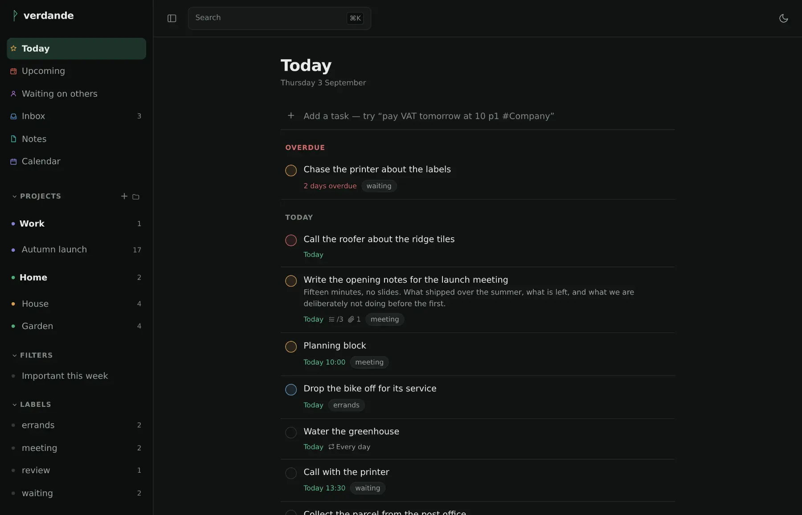
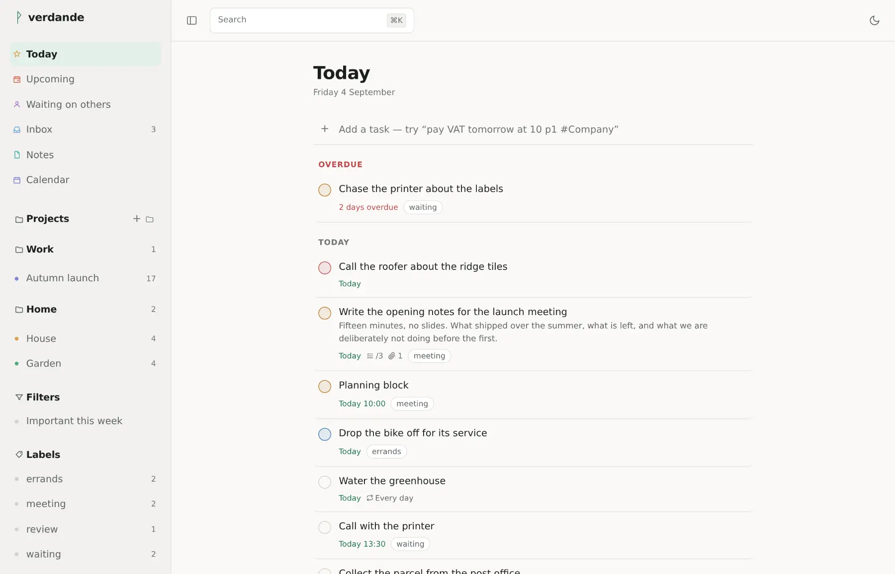
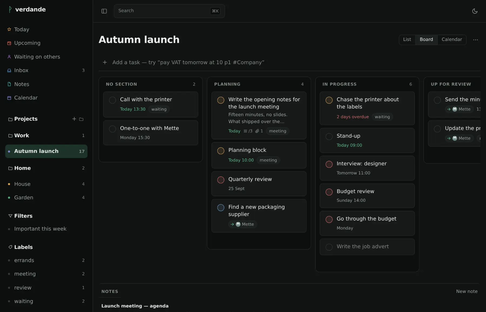
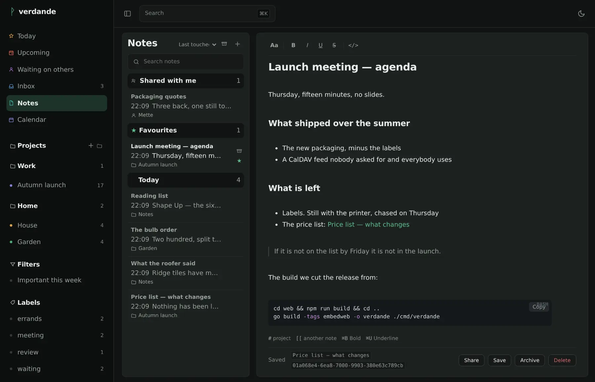
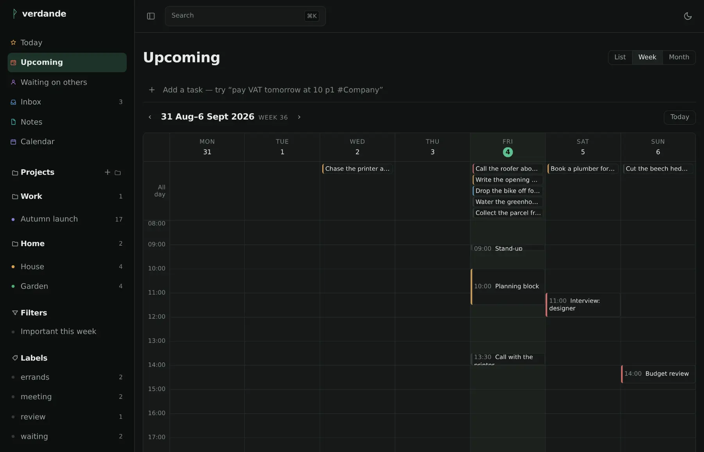
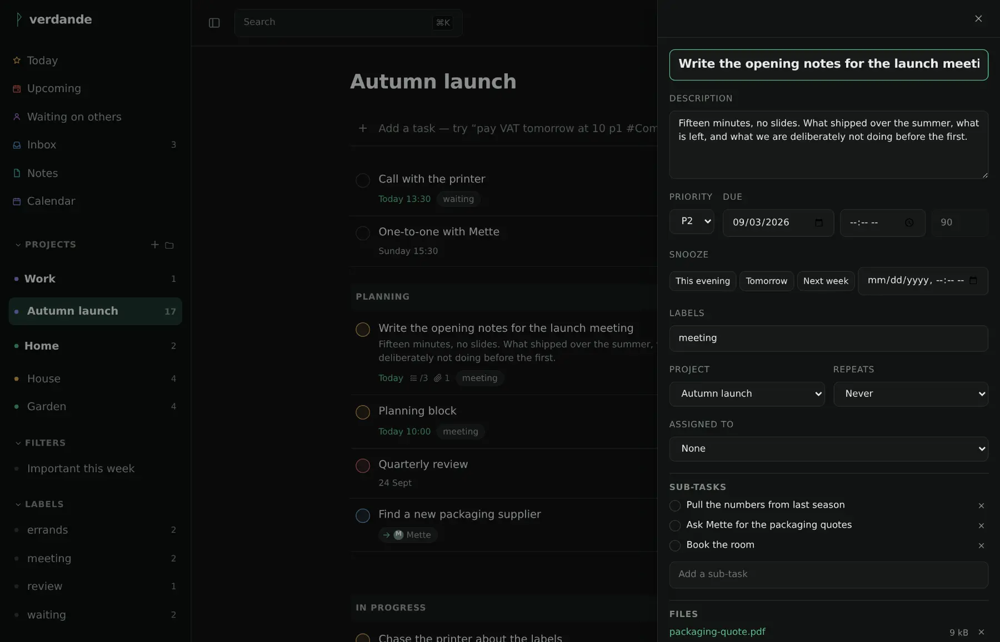
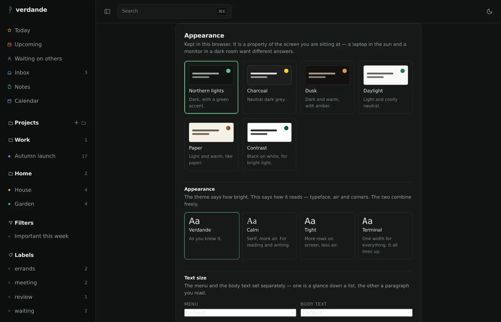
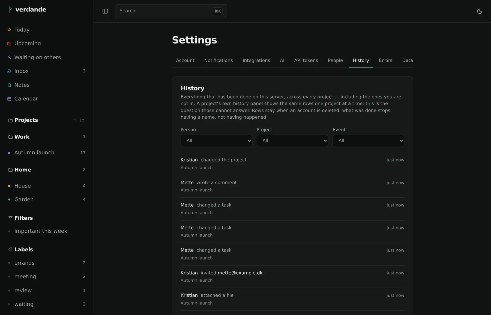
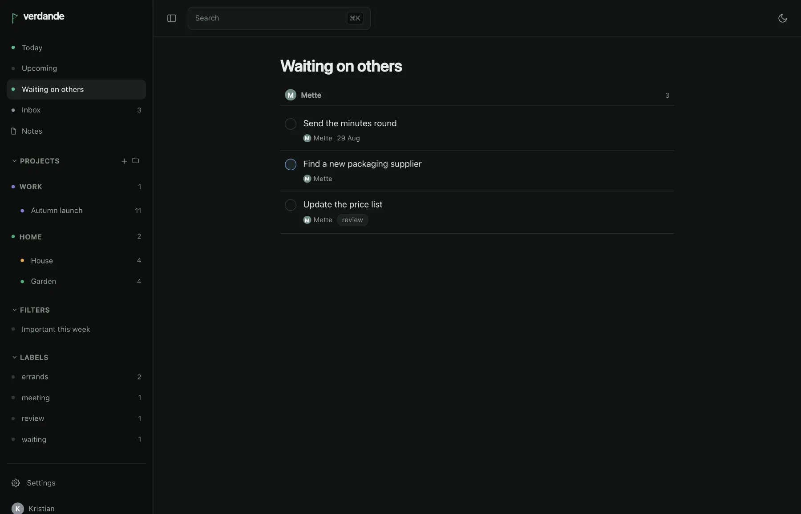
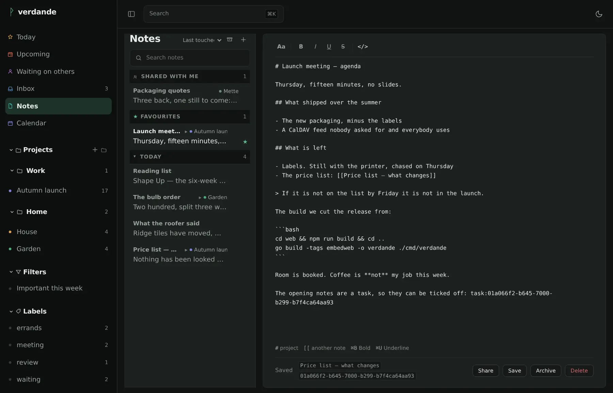
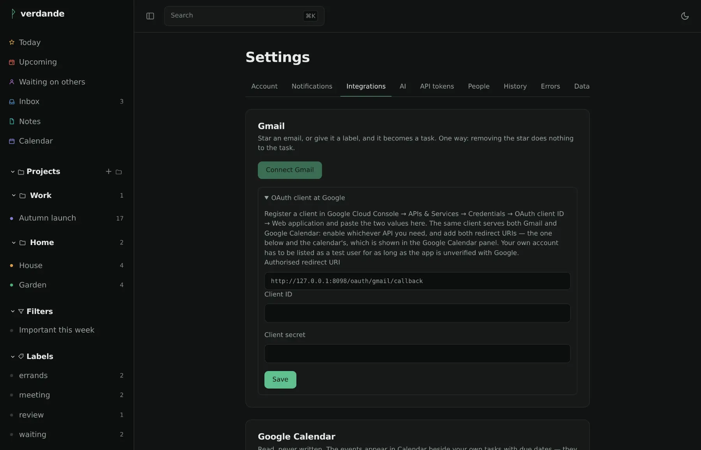
Doing the work
Dates, times, priorities, projects, labels and repetition, parsed out of one line — in Danish and English, mixed freely.
Start typing anywhere and you are writing a task, with the letter you
pressed already in the field. ⌘K goes anywhere else.
Type gron and find grøn. Unicode does not
consider ø an accented o, so a search that
leans on that alone is broken for the people this was built for.
Recurring tasks are RRULE underneath and "every other Tuesday" on the screen. Reminders are absolute or relative, and go out to the devices you have allowed them on.
Rich text to write in, Markdown on disk — and a source view to see it.
Images are pasted or dragged in. #project and
[[another note]] are links, and a task shows what has been
written about it. Archive what is done with it; the bin is for mistakes.
What you have handed to somebody else, on its own page, grouped under the person who has it. The thing a shared list stops being able to tell you the moment it is shared.
Connected to what you already use
Owner, editor and viewer roles. People outside your instance join by invite link. Changes appear live.
Two-way. Tick something off in Apple Reminders and it is ticked off here. Not a read-only feed pretending.
A month or a week of what is due, and a secret ICS address to subscribe to from Apple Calendar, Google or Thunderbird. A Google calendar can be laid over the top, read-only.
The Google half is written to Google's documentation and has not yet been run against Google. The feed and CalDAV have.
Star a mail in Gmail, or flag one over IMAP in iCloud or Fastmail, and it becomes a task. Forward one to your own address instead and the subject is parsed like anything else you type. One way: unstarring it later does nothing to the task you made.
A built-in MCP server. Ask what is due this week, or have a task added, in conversation.
Off by default, your own key, and your choice of Anthropic, OpenAI, Google or something local. Nothing leaves the server until you have filled that in, and everything works without it.
Yours, and checkable
Passkeys, or a password hashed with Argon2id and a second factor with recovery codes. Every device you are signed in on is listed, and any of them can be signed out from here.
Mail tokens, mailbox passwords, second-factor secrets and AI keys are encrypted in the database, and the key lives in a file beside it — not inside it. So a backup you download, or one that ends up somewhere it should not, does not open your mail.
The first account is the administrator, and after that people arrive by invitation. An address on the internet is not an open door.
Every change is written down — who moved it, who closed it, who let somebody in. Delete the account and the trail stays: it is the instance's record, not the person's.
Import from Todoist, export back to it, take everything as JSON, or hand the notes a zip of Markdown and get the same zip back out. The round trip is tested, not promised.
Once a day an instance says it exists — a random id, the version, and nothing else. No tasks, no names, no addresses. It is on to begin with, the settings page prints the exact payload, and one switch stops it.
A landing page can say a project is alive; a list of what landed says it better. This is not a changelog — every release has notes, and they are on the releases page.
This is what it was built for. Runes → Carve a rune,
upload rune/verdande.yaml, create a server from it, set the
public address and your mail server, and start it. No port forwarding —
give it a subdomain and the panel routes it through your Cloudflare
Tunnel.
Open the address afterwards and create the first account. That one is the administrator.
docker run -d --name verdande \
-p 8080:8080 \
-v verdande-data:/data \
-e VERDANDE_BASE_URL=https://todo.example.dk \
gitea.nolimit.dk/kw/verdande:latestVACUUM INTO.verdande is MIT licensed and provided as is, without warranty of any kind. That sentence is in every MIT licence and it is usually skipped, so here it is in the open: if you run this, you run it at your own risk, and nobody is on the hook if it loses your work.
It is one person's project, at version 0.x, and 0.x means the shape can still change. You host it, so the data and the backups are yours. It writes a backup every night and keeps fourteen — and a backup nobody has ever restored is not yet a backup. Restore one before you need to.
Security is worked on rather than claimed. There have been two full reviews of the code, every finding is written down and closed, and what is protected and what is not is spelled out in SECURITY.md — including the parts that are a deliberate trade-off. Nobody outside the project has audited it. The last review found two ways to reach something you should not and closed both; a third review will find more, which is the point of having one.
It is built to sit behind something — a tunnel, a reverse proxy, a VPN — put there by somebody who knows what they exposed. Found a hole? Mail it rather than opening an issue; the address is in SECURITY.md and you get an answer within a week.